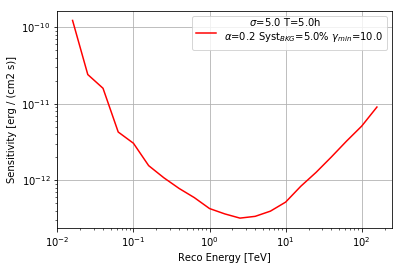

This is a fixed-text formatted version of a Jupyter notebook.
You can contribute with your own notebooks in this GitHub repository.
Source files: cta_sensitivity.ipynb | cta_sensitivity.py
Computation of the CTA sensitivity¶
Introduction¶
This notebook explains how to derive the CTA sensitivity for a point-like IRF at a fixed zenith angle and fixed offset. The significativity is computed for the 1D analysis (On-OFF regions) and the LiMa formula.
We will be using the following Gammapy classes:
Setup¶
As usual, we’ll start with some setup …
In [1]:
%matplotlib inline
In [2]:
from gammapy.scripts import CTAPerf, SensitivityEstimator
Load IRFs¶
First import the CTA IRFs
In [3]:
filename = '$GAMMAPY_EXTRA/datasets/cta/perf_prod2/point_like_non_smoothed/South_5h.fits.gz'
irf = CTAPerf.read(filename)
Compute sensitivity¶
Choose a few parameters, then run the sentitivity computation.
In [4]:
sens = SensitivityEstimator(
irf=irf,
livetime='5h',
)
sens.run()
Print and plot the results¶
In [5]:
sens.print_results()
INFO:gammapy.scripts.cta_sensitivity:** Sensitivity **
ENERGY FLUX
TeV erg / (cm2 s)
--------- -----------------
0.0158489 1.22353358828e-10
0.0251189 2.40363677936e-11
0.0398107 1.59122601854e-11
0.0630957 4.26737356505e-12
0.1 3.04466326156e-12
0.158489 1.55301371261e-12
0.251189 1.07742785338e-12
0.398107 7.82250643556e-13
0.630957 5.93610676157e-13
1.0 4.27244154065e-13
1.58489 3.63853163606e-13
2.51189 3.20427969785e-13
3.98107 3.37974403708e-13
6.30957 3.9510983913e-13
10.0 5.18481585434e-13
15.8489 8.36566298046e-13
25.1189 1.26771004802e-12
39.8107 2.0089332373e-12
63.0957 3.24247655159e-12
100.0 5.10229012813e-12
158.489 9.04770579058e-12
In [6]:
sens.plot()
Out[6]:
<matplotlib.axes._subplots.AxesSubplot at 0x10db22ac8>

In [7]:
# This will give you the results as an Astropy table,
# which you can save to FITS or CSV or use for further analysis
sens.diff_sensi_table
Out[7]:
<Table length=21>
| ENERGY | FLUX |
|---|---|
| TeV | erg / (cm2 s) |
| float32 | float64 |
| 0.0158489 | 1.22353358828e-10 |
| 0.0251189 | 2.40363677936e-11 |
| 0.0398107 | 1.59122601854e-11 |
| 0.0630957 | 4.26737356505e-12 |
| 0.1 | 3.04466326156e-12 |
| 0.158489 | 1.55301371261e-12 |
| 0.251189 | 1.07742785338e-12 |
| 0.398107 | 7.82250643556e-13 |
| 0.630957 | 5.93610676157e-13 |
| 1.0 | 4.27244154065e-13 |
| 1.58489 | 3.63853163606e-13 |
| 2.51189 | 3.20427969785e-13 |
| 3.98107 | 3.37974403708e-13 |
| 6.30957 | 3.9510983913e-13 |
| 10.0 | 5.18481585434e-13 |
| 15.8489 | 8.36566298046e-13 |
| 25.1189 | 1.26771004802e-12 |
| 39.8107 | 2.0089332373e-12 |
| 63.0957 | 3.24247655159e-12 |
| 100.0 | 5.10229012813e-12 |
| 158.489 | 9.04770579058e-12 |
Exercises¶
- tbd